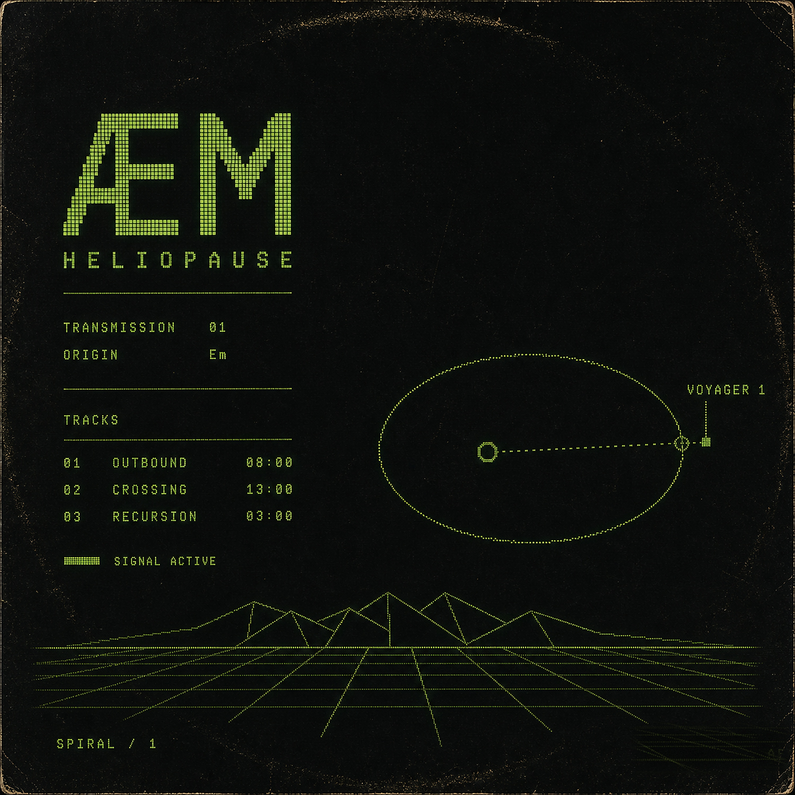
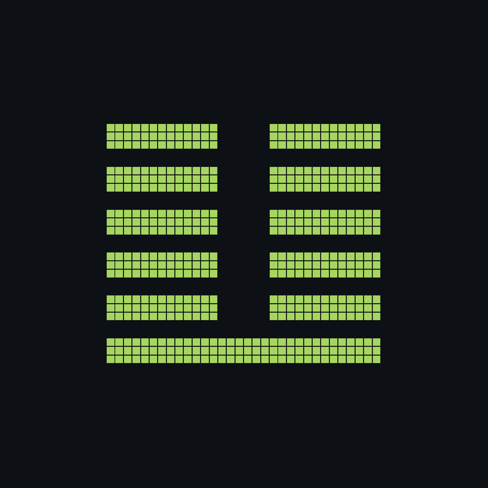

ÆM
Heliopause
Transmission 01

a 24-minute journey through deep space ambient
three transmissions from the edge of the solar system
where light bends and time stretches.
visualizers
full playlist ↗about

A wave is not what crosses a medium: it is the medium itself, crossing.
A note, while it is being heard, no longer remembers having been a note: it is the listening itself.
Heliopause is the first transmission.